Canal Enquanto Vivo · Diretrizes 2026
Centralde Marca
Diretrizes, aplicações e arquivos oficiais da identidade visual do canal Enquanto Vivo. Esta é a base do Conceito 3 — o selo circular como assinatura.
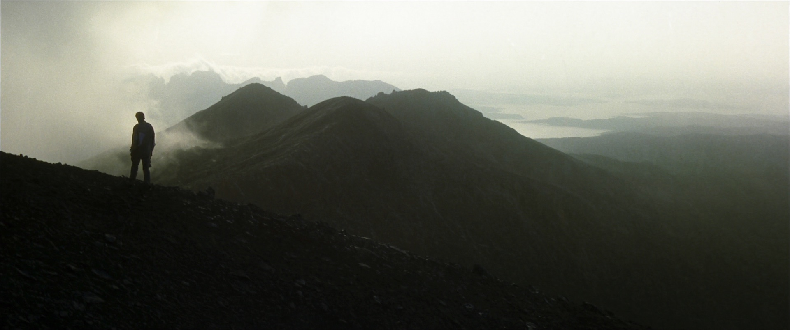
01 / Visão geral
Viver é
o caminho.
O Enquanto Vivo acompanha viagens, caminhos, paisagens e experiências registradas por Fábio Mendonça. A identidade visual traduz uma relação pessoal com a natureza, o tempo, o movimento e as histórias construídas durante cada percurso.
Esta Central de Marca reúne os elementos oficiais do Conceito 3 e orienta o uso do selo em diferentes formatos e plataformas.
- 01
Presença
Estar verdadeiramente no lugar, no momento e na experiência.
- 02
Caminho
Valorizar o percurso e tudo o que acontece antes da chegada.
- 03
Contemplação
Observar a natureza com tempo, profundidade e silêncio.
- 04
Memória
Registrar experiências para que elas continuem vivas.
02 / Marca
Uma marca para
estar no percurso.
As pranchas abaixo usam exclusivamente os vetores oficiais entregues. Nenhuma proporção ou composição foi reconstruída pela interface.
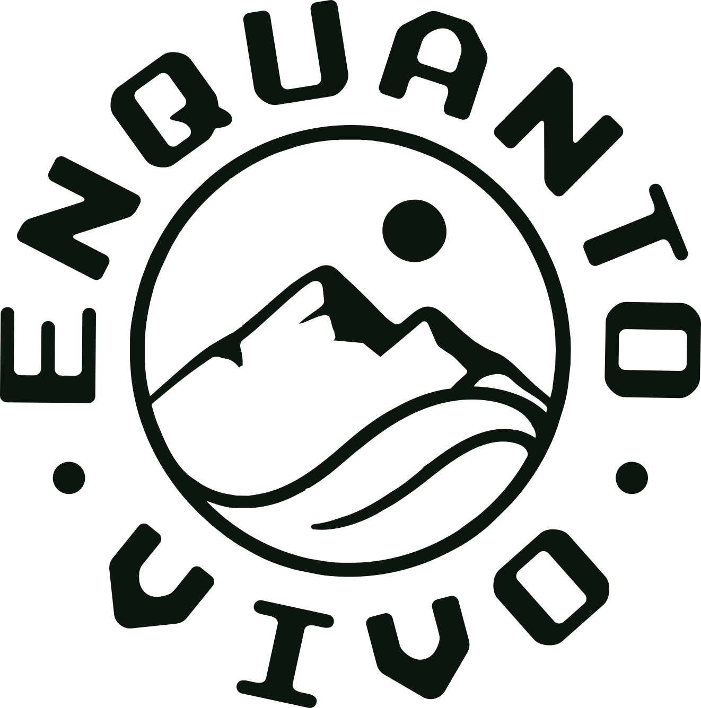
{kind=link}
{kind=link}
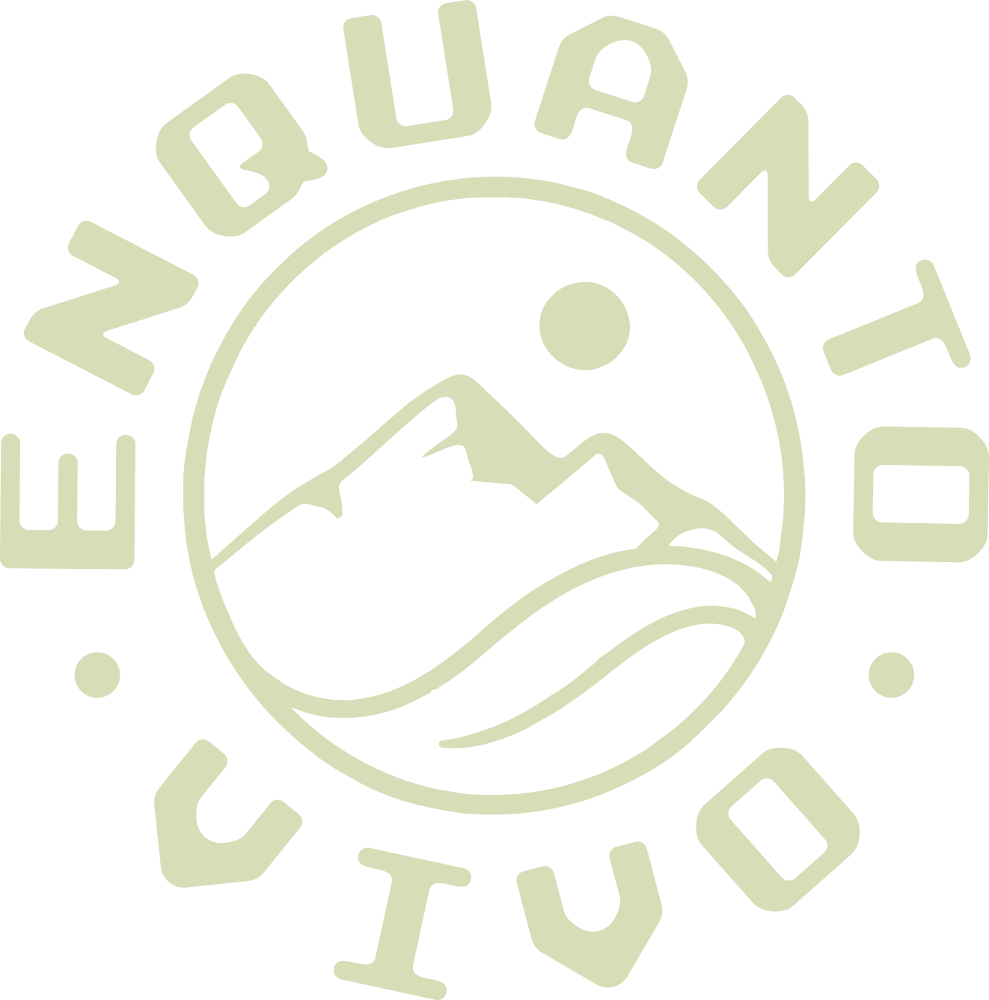
{kind=link}
{kind=link}
{kind=link}
{kind=link}
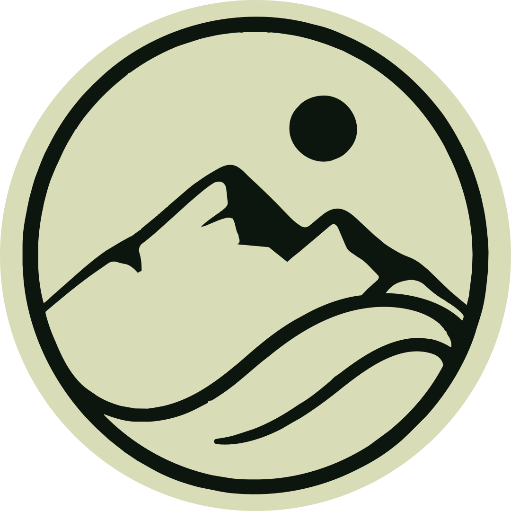
{kind=link}
{kind=link}
{kind=link}
{kind=link}
{kind=link}
03 / Diretrizes técnicas
Precisão antes
da aplicação.
Até a validação da prancha oficial de construção, estas proporções funcionam como referência segura para preservar presença, leitura e consistência do selo.
- Unidade
- 1x equivale a ¼ da altura do selo. Mantenha ao menos 1x livre em todos os lados.
- Tamanho mínimo
- Selo: 28 px ou 8 mm. Assinatura completa: 160 px ou 35 mm.
- Alinhamento
- Óptico. Use os limites externos da composição circular; nunca alinhe considerando apenas o texto do anel.
Usos incorretos — não altere a integridade, proporção ou contraste dos arquivos oficiais.
- × Distorcer
- × Rotacionar
- × Aplicar sombra
- × Reduzir contraste
04 / Cores
Verde profundo.
Sálvia. Presença.
Os vetores entregues confirmam três valores. O off-white do entorno é uma cor funcional da interface e não integra a paleta oficial.
05 / Tipografia
A letra do selo
e a da marca.
Referenciada nos vetores
Nexa Rust Sans
Família de exibição citada nos arquivos originais do selo (peso Black). O arquivo de fonte e as regras definitivas de licenciamento ainda não foram fornecidos — uso restrito ao logotipo.
Tipografia oficial da marca
Google Sans
Grotesca geométrica humanista usada em toda a comunicação — logotipo à parte. Aplicada em títulos, textos corridos, navegação e informações técnicas, nos pesos Regular, Medium e Bold. O arquivo da fonte é instalado localmente em assets/fonts/; onde não estiver disponível, o sistema recorre a uma grotesca equivalente.
Enquanto Vivo
O caminho também faz parte da história.
ABCDEFGHIJKLMNOPQRSTUVWXYZ
abcdefghijklmnopqrstuvwxyz
0123456789 — ÁÉÍÓÚ Ç ÃÕ
06 / Aplicações
O contraste
preserva o selo.
Use sempre a versão que ofereça maior contraste e preserve a leitura do anel “Enquanto Vivo”.
Direção fotográfica
Paisagem, escala, luz e silêncio. As imagens valorizam a dimensão do lugar e a experiência de estar nele. A presença humana aparece de forma discreta, reforçando a relação entre o viajante, o caminho e o ambiente.
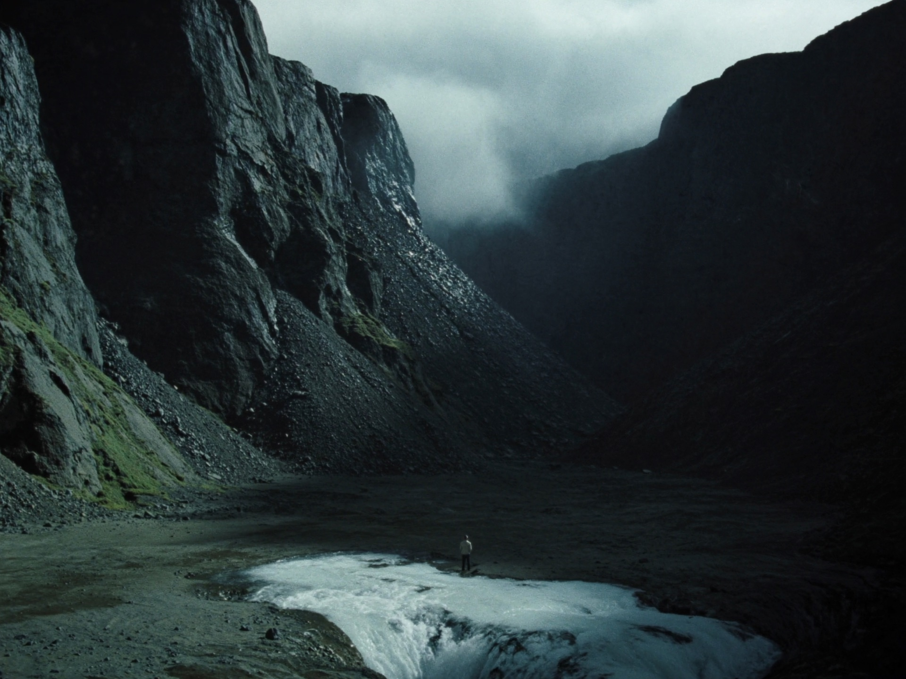
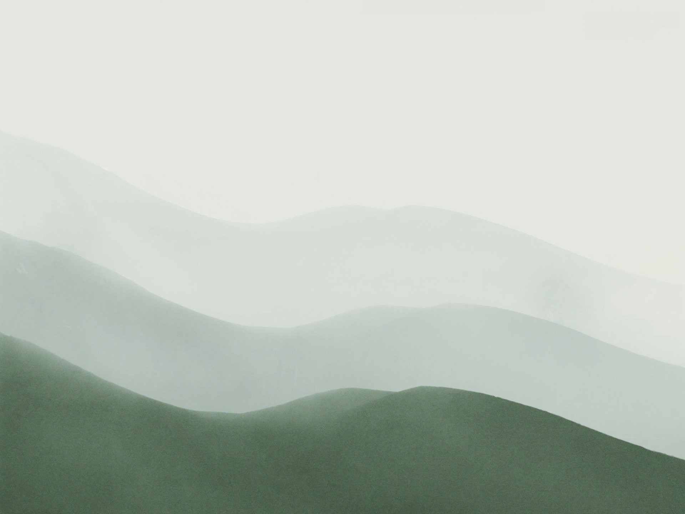
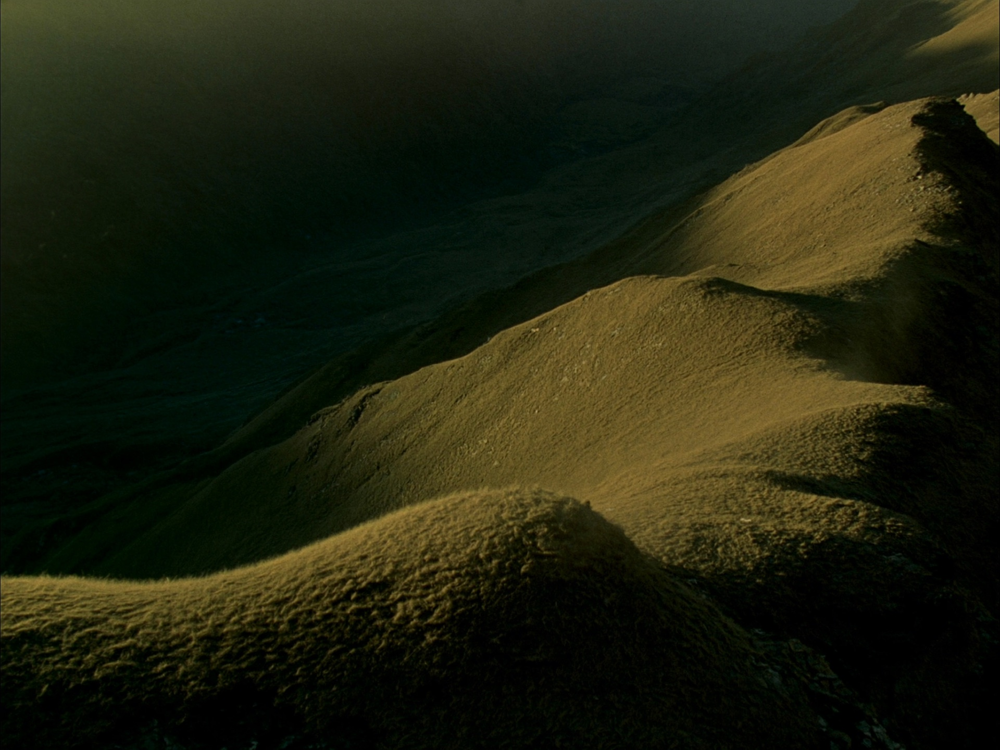
Imagens conceituais de simulação — geradas para direção visual.
07 / Vídeo e plataformas
Da paisagem
à tela.
Estruturas preparadas para receber os arquivos oficiais de YouTube, vídeo e formatos verticais.
{kind=link}
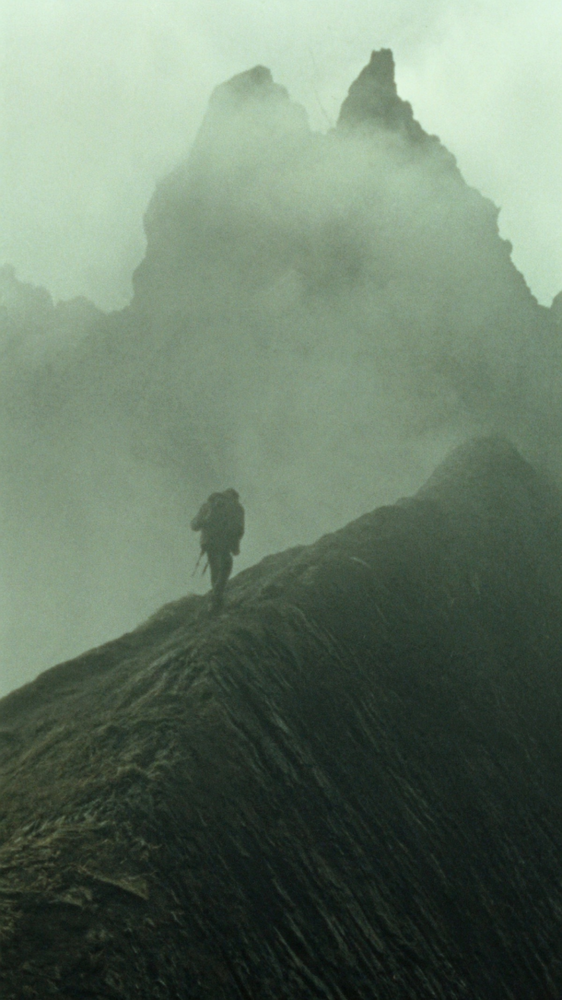
Simulação do canal
Enquanto Vivo
@canalenquantovivo · Viagens, caminhos e histórias.
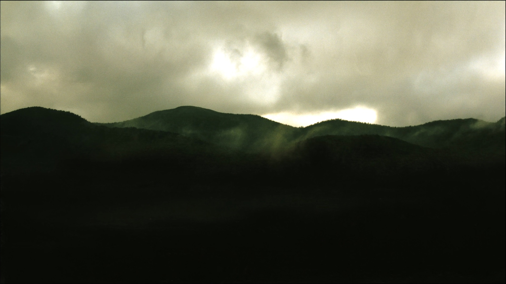
O caminho até o horizonte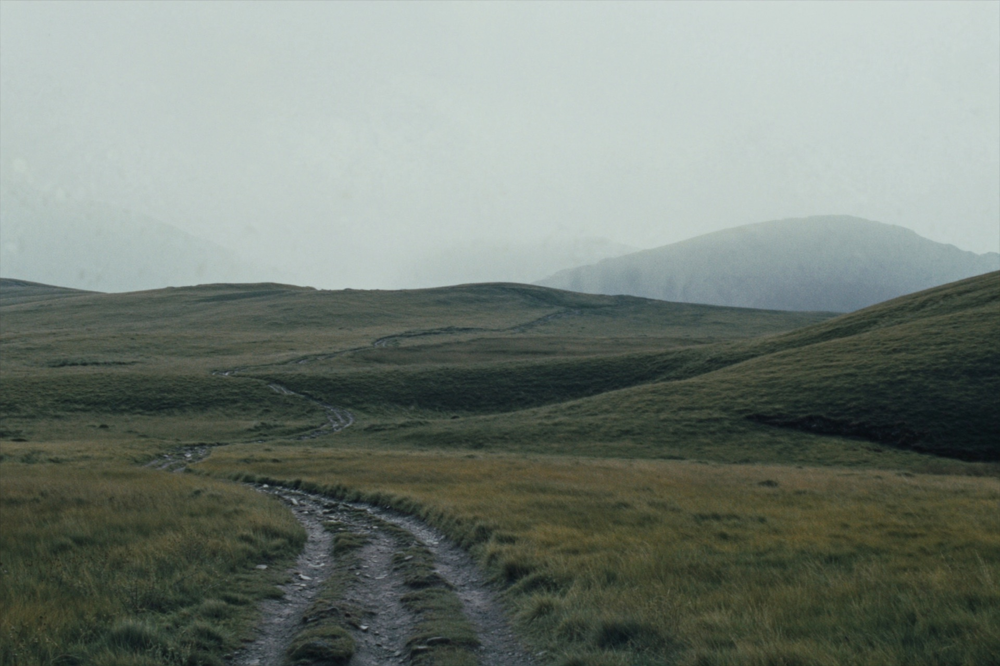
Silêncio acima das nuvens- A montanha nos chama
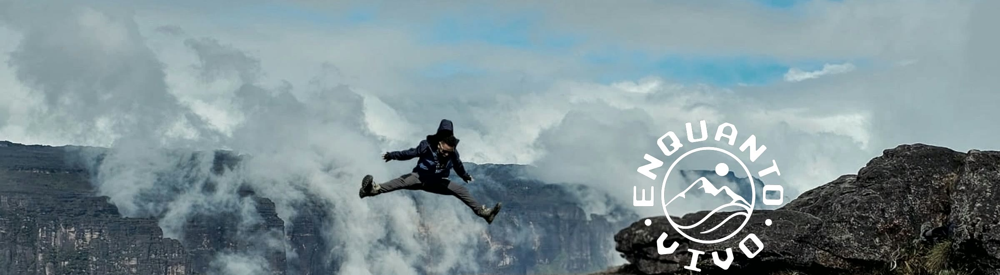
MobileEnquanto Vivo
@canalenquantovivo
Inscrever-seSimulação visual. No celular o YouTube mostra menos das laterais e um recorte mais fechado — o selo foi mantido dentro dessa área. Baixar versão mobile ↓
{kind=link}
Simulação de watermark
Controle apenas de visualização · posicionamento não definitivo.
Logo animado
Montagem do selo para aberturas, encerramentos e assinaturas em vídeo — o símbolo surge, o texto do anel aparece letra por letra e o sol nasce por trás da montanha. Entregue em MP4 e GIF (fundo verde profundo) e MOV/APNG com transparência, nas versões branca e escura.
Baixar pacote (MP4 · WebM · GIF) ↓ · abrir animação no navegador
Selo de vídeo · pronto pra edição
Clipe fechado sobre transparência: um fundo escuro a 20% entra, o selo monta, segura, desmonta ao contrário e o fundo sai. O editor joga a peça por cima de qualquer imagem — sem recorte, sem composição. ProRes 4444 com canal alpha (Premiere · DaVinci · Final Cut · After Effects) e sequência PNG para qualquer software, nas versões branca (imagem escura) e escura (imagem clara).
Prévia sobre imagem real — a entrega é transparente. Baixar pacote (ProRes 4444 · PNG) ↓
08 / Mockups
O horizonte
como linguagem.
Primeiras simulações para validar atmosfera, escala, contraste e presença do selo.
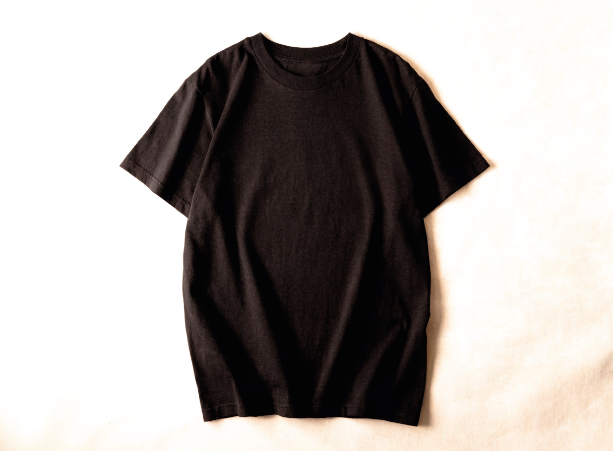
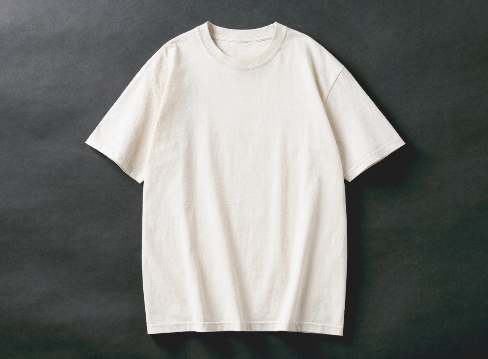
09 / Downloads
Arquivos oficiais,
prontos para uso.
SVG (selo, símbolo, avatar, assinatura simplificada) + pacotes PNG e PDF disponíveis. Demais formatos permanecem sinalizados como pendentes.
- Selo · versão brancaBaixar ↓
- Selo · versão verde-sálviaBaixar ↓
- Selo · versão verde profundoBaixar ↓
- Símbolo isolado · versão brancaBaixar ↓
- Símbolo isolado · versão verde-sálviaBaixar ↓
- Símbolo isolado · versão verde profundoBaixar ↓
- Avatar de perfil · sálviaBaixar ↓
- Avatar de perfil · escuroBaixar ↓
- Assinatura do autor (Fábio Mendonça) · versão brancaBaixar ↓
- Assinatura do autor (Fábio Mendonça) · versão verde-sálviaBaixar ↓
- Assinatura do autor (Fábio Mendonça) · versão verde profundoBaixar ↓
- Pacote PNG · fundo transparente · @1x / @2x / @4xBaixar .zip ↓
- Pacote PDF · vetorialBaixar .zip ↓
- Logo animado · MP4 · GIF · MOV/APNG transparente · branca + escuraBaixar .zip ↓
- Selo de vídeo · ProRes 4444 alpha + sequência PNG · branca + escuraBaixar .zip ↓
- Capa de YouTube · 2560 × 1440Baixar ↓
- Capa de YouTube · versão mobileBaixar ↓
- Templates sociais · o feed daqui em dianteAbrir ↗